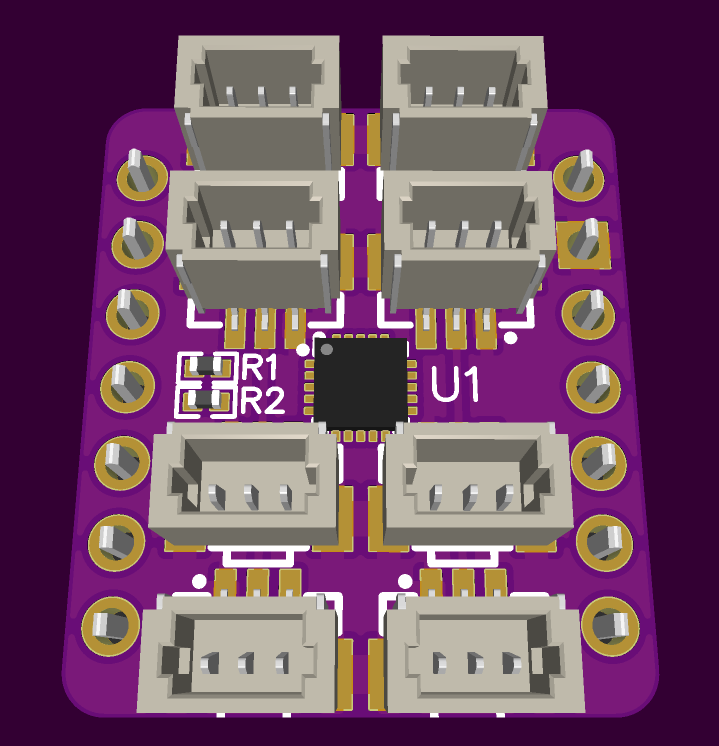
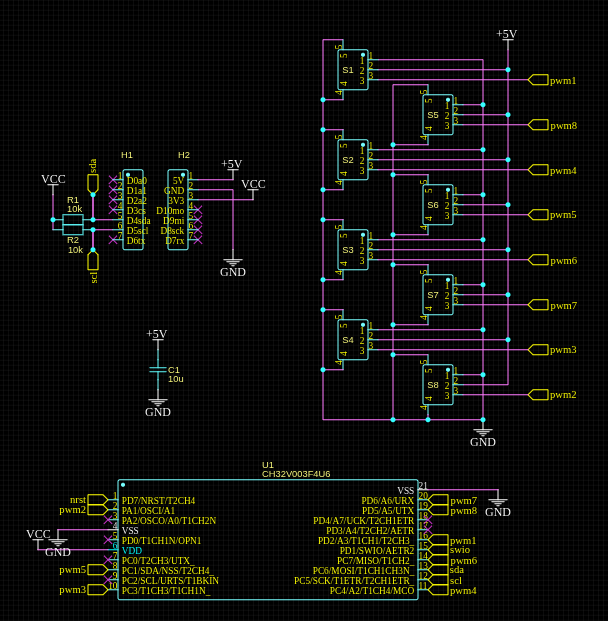

Hardware¶
Published on 2025-07-17 in Mite Servo.
With a plan for the software in place, it’s time to design the hardware. I can comfortably fit eigth of the 1mm pitch servo sockets on a Xiao form factor shield, with enough room for the smallest CH32V003 chip in the middle.
There are also I2C pull-up resistors, and later I also added a big footprint for a capacitor (not on the render), in case we need to filter the current spikes a bit. It’s all rather simple in terms of connections.
I had to rearrange the sockets physically a bit to simplify the routing, but this is something we can fix in software later. There are also SWIO and NRST pads broken out on the bottom of the board, for programming. And that’s it, it should be all that is required.